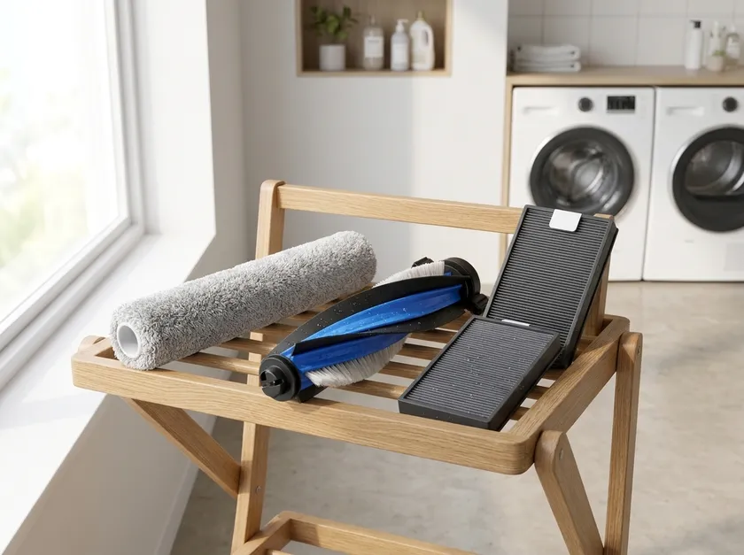

에코백스 (ECOVACS)
에코백스 디봇 T90 프로 옴니 롤러 걸레 건조와 1년 세트 관리법
글·구성: 제이상점 · 기종별 1:1 호환 실물 점검 · 교체 주기 비교표 · 스마트스토어 패키지 안내

핵심 관리 · 선택 체크포인트
- 원통형 롤러 물걸레로 바닥을 닦아내는 에코백스 디봇 T90 프로 옴니(T80 옴니 호환)는 롤러 슬리브의 파일 탄성과 V자 메인브러시 상태를 주기적으로 함께 점검해 주면 청소 만족도가 높게 유지됩니다.
- 원통형 극세사 롤러 슬리브와 블루·블랙 V자 메인브러시 교대 루틴: T90 프로 옴니는 촘촘한 원통형 롤러 걸레와 V자 배열 브러시, 블루 곡선형 2암 사이드브러시를 사용합니다.
- 1년 패키지 구성품과 기종별 옵션 확인표: 보유 기종이 T90 프로 옴니 또는 T80 옴니인지 확인한 뒤 상세페이지에서 세제 포함·미포함 옵션을 선택해 보세요.
- 베란다 매트 통풍 건조와 스테이션 옆 바구니 수납 동선: 물기가 있는 롤러 걸레와 필터는 베란다
- 물세척한 필터를 냄새 없이 말리는 기준은 필터 세척 후 24시간 완전 건조 가이드에서, 스테이션 더스트백 교체 전 확인 포인트는 더스트백 여분과 실링 상태 점검법에서 확인하실 수 있습니다.
실물 부품 디테일 · 관리 구성 이미지




부품 규격 · 점검 기준표
| 확인 항목 | 부품·옵션 특징 | 점검·선택 포인트 |
|---|---|---|
| V자 메인브러시·사이드브러시 | 블루·블랙 V자 롤러 브러시 + 곡선형 2암 사이드브러시 | 브러시 양끝 축 먼지 제거 및 솔 탄성 확인 |
| 원통형 롤러 물걸레 | T90·T80 전용 원통형 극세사 롤러 슬리브 | 세척 후 통풍 건조 및 예비 롤러와 1:1 교대 |
| 워셔블 필터·더스트백 | 사각 먼지통 필터 + 스테이션 전용 더스트백 | 필터 24시간 그늘 건조 및 더스트백 카드 슬롯 밀착 장착 |
💡 교체 주기가 겹치는 필터·브러시·물걸레·더스트백은 단품 배송비를 여러 번 내기보다 에코백스 T90 프로 옴니 기간별 세트(3개월·6개월·1년)로 미리 구비해 두면 물세척 후 24시간 교대 건조까지 끊김 없이 관리할 수 있습니다.
자주 묻는 질문 (FAQ)
Q. 에코백스T90프로옴니의 V자 메인브러시·사이드브러시 규격과 관리 기준은 무엇인가요?
A. 블루·블랙 V자 롤러 브러시 + 곡선형 2암 사이드브러시 규격을 사용하며, 브러시 양끝 축 먼지 제거 및 솔 탄성 확인 기준으로 점검·교체하면 청소 효율을 안정적으로 유지할 수 있습니다.
Q. 에코백스T90프로옴니의 원통형 롤러 물걸레 규격과 관리 기준은 무엇인가요?
A. T90·T80 전용 원통형 극세사 롤러 슬리브 규격을 사용하며, 세척 후 통풍 건조 및 예비 롤러와 1:1 교대 기준으로 점검·교체하면 청소 효율을 안정적으로 유지할 수 있습니다.
Q. 에코백스T90프로옴니의 워셔블 필터·더스트백 규격과 관리 기준은 무엇인가요?
A. 사각 먼지통 필터 + 스테이션 전용 더스트백 규격을 사용하며, 필터 24시간 그늘 건조 및 더스트백 카드 슬롯 밀착 장착 기준으로 점검·교체하면 청소 효율을 안정적으로 유지할 수 있습니다.
제이상점 1:1 검수 추천 패키지 · 구매 안내
메인 추천 구성
대표 구성 참고가 71,100원대 (옵션·쿠폰별 스마트스토어 결제 화면 기준)
1년 세트6개월 세트3개월 세트
☑️ 주문 전 확인해 두면 좋은 제이상점 안심 포인트
· 기종별 1:1 전용 규격 검수: 모델명·연식에 맞는 호환·정품 구성을 검수해 오주문 불안을 줄였습니다.
· 해외직배송 미리 주문 팁: 중국 구매대행·해외직배송 상품이므로 마지막 여분 1개를 꺼내 쓰는 시점에 개인통관고유부호와 함께 여유 있게 주문해 두시면 훨씬 경제적인 비용으로 끊김 없이 교체하실 수 있습니다.
· 기종별 1:1 전용 규격 검수: 모델명·연식에 맞는 호환·정품 구성을 검수해 오주문 불안을 줄였습니다.
· 해외직배송 미리 주문 팁: 중국 구매대행·해외직배송 상품이므로 마지막 여분 1개를 꺼내 쓰는 시점에 개인통관고유부호와 함께 여유 있게 주문해 두시면 훨씬 경제적인 비용으로 끊김 없이 교체하실 수 있습니다.
📖 더 많은 가정 내 사용 스토리와 상세 후기가 궁금하시다면
📱 네이버 블로그 모바일 원문 보기 ↗